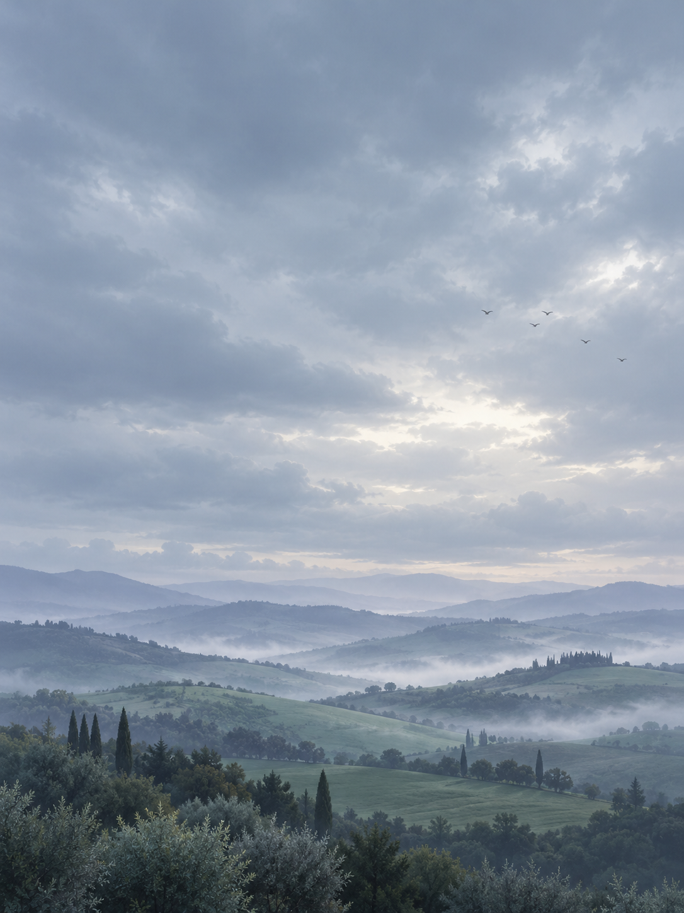

23°
It's Sunny
Weather Today
7-Day Forecast
Clear skies, slower days.
Weather details
Wind12 km/hSouth-west
Feels like25°Comfortable
Humidity64%A little breeze
Sunrise & sunset
06:12 AM08:34 PM
23°
It's Sunny · H:28° L:14° · Feels like 25°
NEXT 12 HOURS
6 AM · 24°
7-DAY FORECAST
SELECTED DAY
Today · 14° — 26°
Hourly outlook for Tuscany.

12°
It's Rainy
Weather Today
A quieter kind of day.
Light rain over the hills.
Chance of rain80%Expected this afternoon
Wind12 km/hSouth-west
Settings
Tuscany · 4 cities saved
01 Units
23°
Temperature
12km/h
Wind speed
02 Alerts
Daily forecast
Every morning at 7:30
Rain in the next hour
Only when it's about to start
Severe weather
Storms, heat, air quality
03 Appearance
Made for slower mornings.